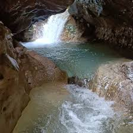
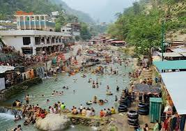
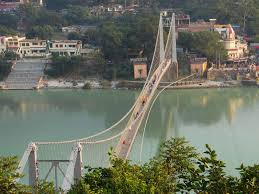
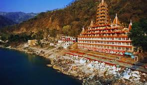
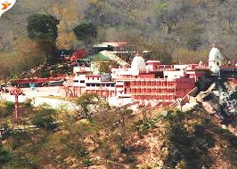
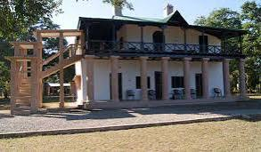
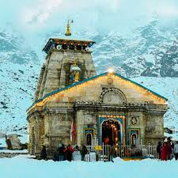
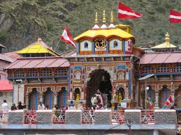
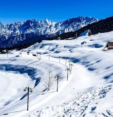
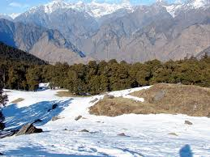

Dehradun

Robber's Cave (Guchhupani)
Natural cave formation with a stream inside.

Sahastradhara
"Thousand fold spring" with sulfur water springs and caves.
Mussoorie

Kempty Falls
Scenic waterfall with natural pools for swimming.
Gun Hill
Second highest peak of Mussoorie offering panoramic views.

Mall Road
Popular shopping and dining street with colonial architecture.
Rishikesh

Lakshman Jhula and Ram Jhula
Suspension bridges over the Ganges River.
Triveni Ghat
Sacred ghat for Ganga Aarti and holy dips.

Neelkanth Mahadev Temple
Hindu temple dedicated to Lord Shiva.
Haridwar

Har Ki Pauri
Sacred ghat with evening Ganga Aarti.

Chandi Devi Temple and Mansa Devi Temple
Hilltop temples dedicated to Goddess Chandi and Mansa Devi.
Nainital

Naini Lake
Scenic lake surrounded by hills and boat rides.
Naina Devi Temple
Hindu temple dedicated to Goddess Naina Devi.
Snow View Point
Viewpoint offering panoramic views of the Himalayas.
Jim Corbett National Park

Jim Corbett National Park
Oldest national park in India, known for Bengal tigers and wildlife safaris.

Dhikala Zone
Wildlife zone offering jeep safaris and elephant rides.
Kedarnath and Badrinath

Kedarnath Temple
Hindu temple dedicated to Lord Shiva, one of the Char Dhams.

Valley of Flowers National Park
Valley of Flowers National Park is a UNESCO World Heritage Site, known for its alpine flowers and meadows.
Auli

Auli is a ski resort offering panoramic views of the Himalayas, popular among skiing enthusiasts.

Gurso Bugyal is a meadow near Auli known for trekking and views of Nanda Devi peak.
Other Attractions
Ranikhet
Ranikhet is a hill station offering views of the Himalayas and famous for Jhula Devi Temple.
Almora
Almora is a hill town known for its cultural heritage and the Nanda Devi Temple.
Festivals and Cultural Events
Kumbh Mela in Haridwar
Kumbh Mela is a massive religious gathering held every 12 years in Haridwar.
Ganga Dussehra in Haridwar
Ganga Dussehra is a festival celebrating the descent of River Ganga to Earth, observed in Haridwar.
Adventure and Nature Activities
Trekking and Hiking
Uttarakhand offers numerous trekking routes including Roopkund Trek and Valley of Flowers Trek.
River Rafting
River rafting is an adventure sport popular in Rishikesh and other rivers of Uttarakhand.